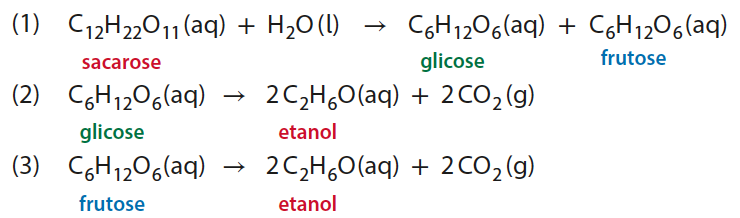
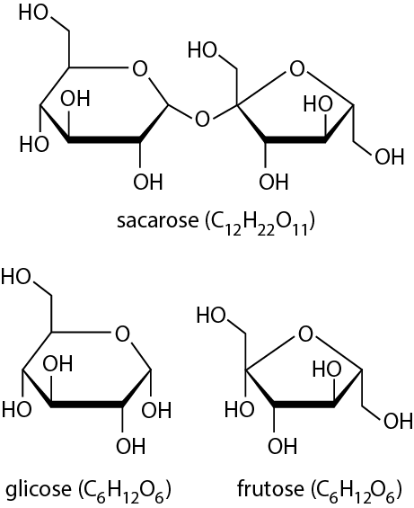
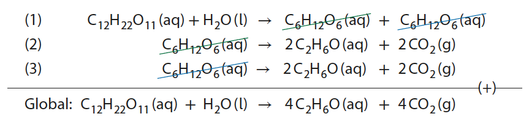
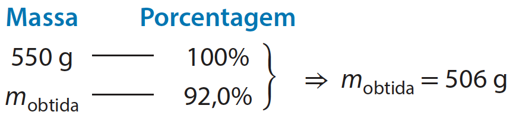
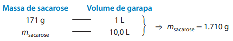
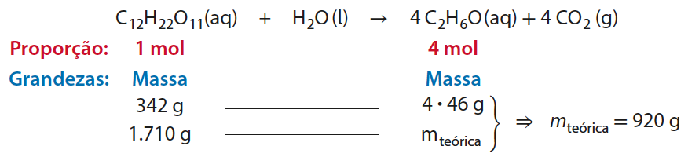
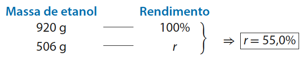
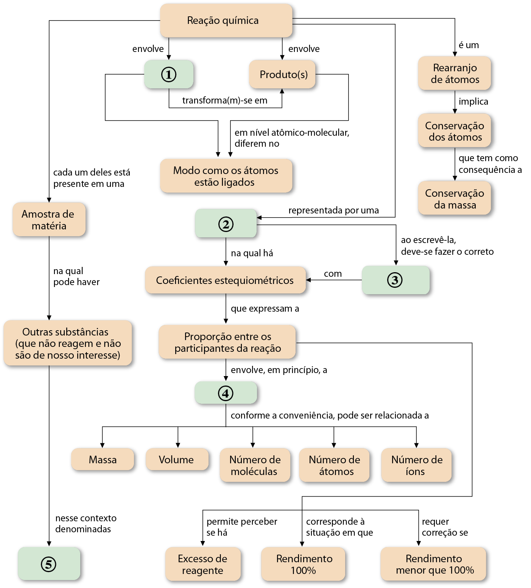

Reações sucessivas, pureza e rendimento
Em uma indústria sucroalcooleira (que produz açúcar e etanol a partir da cana-de-açúcar) de pequeno porte, químicos e engenheiros estão testando o protótipo em tamanho reduzido de um novo reator (recipiente em que se realizam reações químicas) para obter etanol. Atualmente, o rendimento da produção de etanol nessa indústria é 48,0%. O novo equipamento operará em condições distintas das atuais, visando melhorar esse rendimento.
A sequência de reações será a mesma empregada hoje: (1) hidrólise da sacarose existente no caldo de cana (garapa), que produz glicose e frutose; (2) fermentação alcoólica da glicose; (3) fermentação alcoólica da frutose. Essas reações ocorrem na presença de enzimas da levedura Saccharomyces cerevisiae e são assim equacionadas:


Figura 4. Fórmulas estruturais da sacarose, da glicose e da frutose.
No teste, os químicos e engenheiros introduziram no reator 10,0 L de caldo de cana, no qual a concentração de sacarose é 171 g/L (isto é, em cada litro de solução estão dissolvidos 171 gramas de sacarose). Transcorrido o tempo necessário para a ocorrência das reações, o etanol produzido foi separado do restante do meio aquoso (que contém produtos indesejados e sacarose que não reagiu) usando um mesmo equipamento empregado atualmente pela empresa, que fornece uma mistura contendo 92,0% (em massa) de etanol, sendo o restante água e pequena porcentagem de outras substâncias. Foram obtidos 550 g da mistura.
Como determinar se o rendimento do processo nesse novo reator é maior que o atual? Vamos discutir como isso é feito, aproveitando para trabalhar três conceitos relacionados à estequiometria: reações sucessivas, pureza e rendimento.
Reações sucessivas
Podemos operar matematicamente com as equações balanceadas (1), (2) e (3) apresentadas, com a intenção de obter a equação global:

Com isso, temos uma equação global balanceada que fornece a proporção estequiométrica entre sacarose e etanol, que é de 1 mol : 4 mol.
Perceba que a glicose produzida em (1) é reagente em (2) e que a frutose produzida em (1) é reagente em (3), o que possibilitou a simplificação feita e forneceu uma equação global na qual glicose e frutose não comparecem. Ao somar equações de reações sucessivas, visamos ao cancelamento dos intermediários, substâncias produzidas em uma etapa e que reagem em outra, subsequente.
Pureza
Segundo os dados apresentados anteriormente, 92,0% da massa da mistura final obtida corresponde ao etanol. Portanto, a substância de interesse não está pura, mas misturada com outras substâncias que, nesse contexto, podem ser consideradas impurezas.
Quando afirmamos que uma amostra contém impurezas, isso não significa necessariamente que ela apresenta sujeiras ou substâncias tóxicas (embora isso possa acontecer). Significa que a amostra contém, além da substância de interesse, outras que não são úteis ou não são o foco de atenção imediata. Denominamos pureza de uma amostra o porcentual de sua massa que corresponde à substância de interesse. No exemplo dado, a pureza do etanol obtido é 92,0%.
Podemos determinar a massa obtida de etanol ( m obtida ) utilizando a massa total da mistura obtida (550 g) e sua pureza (92,0%):

Rendimento
Vamos agora determinar a massa de etanol que seria teoricamente obtida se a reação tivesse rendimento total (100%), ou seja, caso se completasse sem que reações concorrentes tenham também consumido a sacarose e sem que quaisquer fatores tenham impedido o processo de prosseguir até que toda a sacarose se transformasse em etanol e dióxido de carbono.
Como foram empregados 10,0 L de garapa contendo 171 g/L de sacarose, a massa total utilizada de sacarose () foi:

Então, podemos calcular a massa teórica ( ) associada ao rendimento máximo. O cálculo emprega a proporção estequiométrica entre sacarose e etanol (1 mol : 4 mol), que é evidenciada pela equação global, assim como a massa total de sacarose utilizada:

Essa massa teórica indica o máximo que poderia ser obtido se as condições experimentais permitissem rendimento total.
A massa que foi obtida (506 g) corresponde a determinado porcentual da massa teórica (920 g), que é denominado rendimento do processo e pode ser assim calculado:

Esse resultado revela que o protótipo em pequena escala do novo reator tem rendimento (55,0%) maior que o atual (48,0%). Se, ao implementar esse protótipo em tamanho real, os químicos e engenheiros químicos conseguirem fazer com que o processo no novo reator reproduza esse rendimento mais elevado, a mudança terá um impacto positivo na produção de etanol dessa indústria.

Exercícios
18. O zinco é o metal empregado na galvanização do ferro, processo que consiste em revestir objetos de ferro com uma camada de zinco, que o torna um pouco mais resistente à corrosão. O ferro galvanizado é usado, por exemplo, na fabricação de arames e calhas.
O zinco metálico é produzido industrialmente, por meio de duas reações químicas, a partir do ZnS obtido do minério blenda. As etapas são assim equacionadas:
2 ZnS (s) + 3 O₂ (g) → 2 ZnO (s) + 2 SO₂ (g)
ZnO (s) + CO (g) → Zn (s) + CO₂ (g)
Considerando que ambas as etapas tenham rendimento total e que os demais reagentes estejam em quantidade suficiente, quantos mols de zinco metálico podem ser obtidos a partir de 8,5 mol de ZnS?
19. Fundamentado nas informações da atividade anterior, faça uma estimativa da massa de zinco metálico que pode ser obtida a partir de 2,925 t de ZnS.
20. A ureia, CO(NH₂)₂, é uma substância com várias aplicações industriais, entre as quais se destacam o emprego em fertilizantes, em rações para gado e como matéria-prima na fabricação de algumas variedades de plásticos. A produção industrial da ureia envolve a síntese da amônia, seguida pela sua reação com dióxido de carbono, sob condições apropriadas.
N₂ + 3 H₂ → 2 NH₃
2 NH₃ + CO₂ → CO(NH₂)₂ + H₂O
Admitindo que ambas as etapas tenham rendimento total, quantos mols de ureia são produzidos a partir de 100 mol de gás nitrogênio?
21. Expresse a resposta da questão anterior em massa de ureia. (Você já sabe: a tabela periódica é para ser consultada!)
22. Uma indústria siderúrgica produziu um lote de ferro a partir de 1.000 t de minério hematita que continha 80% de Fe₂O₃ (a reação química deste processo está equacionada a seguir). Admitindo rendimento de 100%, qual é a massa obtida do metal?
Fe₂O₃ (s) + 3 CO (g) → 2 Fe (s) + 3 CO₂ (g)
23. (Enem) Fator de emissão ( carbon footprint) é um termo utilizado para expressar a quantidade de gases que contribuem para o aquecimento global, emitidos por uma fonte ou processo industrial específico. Pode-se pensar na quantidade de gases emitidos por uma indústria, uma cidade ou mesmo por uma pessoa. Para o gás CO₂, a relação pode ser escrita:
Fator de emissão de
O termo “quantidade de material” pode ser, por exemplo, a massa de material produzido em uma indústria ou a quantidade de gasolina consumida por um carro em um determinado período. No caso da produção do cimento, o primeiro passo é a obtenção do óxido de cálcio, a partir do aquecimento do calcário a altas temperaturas, de acordo com a reação:
CaCO₃ (s) → CaO (s) + CO₂ (g)
Uma vez processada essa reação, outros compostos inorgânicos são adicionados ao óxido de cálcio, tendo o cimento formado 62% de CaO em sua composição.
Dados: Massas molares em g/mol:
CO₂ = 44; CaCO₃ = 100; CaO = 56.
Fonte: TREPTOW, R. S. Carbon footprint calculations: an application of chemical principles. Journal of Chemical Education. v. 87, n. 2, p. 168-171, jan. 2010 (adaptado).
Considerando as informações apresentadas no texto, qual é, aproximadamente, o fator de emissão de CO₂ quando 1 tonelada de cimento for produzida, levando-se em consideração apenas a etapa de obtenção do óxido de cálcio?
- a. 4,9 × 10⁻⁴
- b. 7,9 × 10⁻⁴
- c. 3,8 × 10⁻¹
- d. 4,9 × 10⁻¹
- e. 7,9 × 10⁻¹
24. Uma amostra de 4,0 g de latão, liga dos metais cobre e zinco, foi tratada com ácido clorídrico, HCl (aq), suficiente para que todo o zinco reagisse, com rendimento total, de acordo com a equação:
Zn (s) + 2 HCl (aq) → ZnCl₂ (aq) + H₂ (g)
Foram produzidos 560 mL de gás hidrogênio (H₂), medidos a 0 °C e 1 atm.
Sabe-se que o cobre não reage com ácido clorídrico e que o volume molar de um gás ideal, a 0 °C e 1 atm, é 22,4 L/mol.
Mostre que é possível determinar a massa de zinco na amostra de latão analisada. Realize o cálculo e determine também que porcentagem da massa da amostra ela representa.
25. O calcário é uma rocha que, por apresentar carbonato de cálcio (CaCO₃) em sua composição, é empregada na obtenção de cal viva (CaO), um importante produto industrial. Uma amostra de 25 g de calcário foi submetida à decomposição por aquecimento e verificou-se a produção de 5,0 L de gás carbônico (CO₂), volume que foi medido a 30 °C e 1 atm. (Considere que as impurezas da amostra não produzam CO₂ e que o volume molar de gás ideal, a 30 °C e 1 atm, é 25 L/mol.)
CaCO₃ (s) → CaO (s) + CO₂ (g)
- a. Qual é a massa de CaCO₃ presente na amostra?
- b. Determine o grau de pureza da amostra, ou seja, a porcentagem de CaCO₃ nela existente.
26. O crômio (que alguns chamam de cromo) é um metal empregado, entre outras finalidades, na produção do aço inox e no revestimento (cromação) de algumas peças metálicas. Esse metal é produzido por meio de uma reação que pode ser assim equacionada:
Cr₂O₃ (s) + 2 Al (s) → 2 Cr (s) + Al₂O₃ (s)
Em uma indústria metalúrgica que produz crômio metálico, esse processo ocorre com rendimento de 75%. Quantos mols de crômio metálico podem ser obtidos a partir de 50 mol de trióxido de dicromo (Cr₂O₃) e 100 mol do metal alumínio?
27. Embora a prata possa ser encontrada na natureza na forma de substância simples, a maior parte de sua produção é executada por meio da reação química entre o sulfeto de prata (Ag₂S), proveniente de um minério de prata, a argentita, e o oxigênio do ar. Essa reação é assim equacionada:
Ag₂S (s) + O₂ (g) → 2 Ag (s) + SO₂ (g)
Em determinada indústria, essa reação é realizada em condições adequadas para atingir um rendimento de 80%. Faça uma estimativa de quantos mols de Ag₂S são necessários para, reagindo com a quantidade suficiente de oxigênio, produzir 16 mol de prata.
28. Como comentamos neste capítulo, o etanol (C₂H₆O) é obtido a partir da sacarose (C₁₂H₂₂O₁₁) por meio da reação assim equacionada:
C₁₂H₂₂O₁₁ (aq) + H₂O ( l) → 4 C₂H₆O (aq) + 4 CO₂ (g)
Realizando esse processo em um laboratório que simula processos industriais, um grupo de estudantes obteve 900 L de gás carbônico, medidos a 30 °C e 1 atm, a partir de 6.840 g de sacarose.
- a. Considerando que o volume molar de gás ideal, a 30 °C e 1 atm, seja 25 L/mol, e admitindo que nenhuma outra reação que produza CO₂ tenha ocorrido no meio reacional, mostre qual é o rendimento que os estudantes obtiveram no processo.
- b. Faça uma estimativa da massa de etanol obtida pelo grupo de estudantes nesse procedimento.